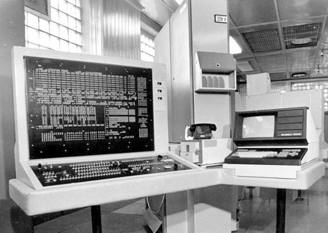

1954 — 1964 годы появились вычислительные машины второго поколения. Следующим шагом в развитии стала разработка компьютеров, работающих на транзисторах. Транзисторами называются приборы, созданные из полупроводниковых материалов – позволяющие управлять током, идущим в цепи. Первый известный стабильно работающий транзистор был создан в Америке в 1948 году командой физиков — исследователей Шокли и Бардиным.
По скорости работы электронно-вычислительные машины существенно отличались от предшественников — скорость доходила до сотен тысяч операций в одну секунду. Уменьшились и размеры, да и потребление электрической энергии стало меньше. Также значительно увеличилась сфера использования. Происходило это за счет стремительной разработки программного обеспечения. Наш лучший компьютер – БЭСМ-6 обладала рекордным быстродействием – 1000000 операций в секунду. Разработана в 1965 году под руководством главного конструктора С. А. Лебедева.
